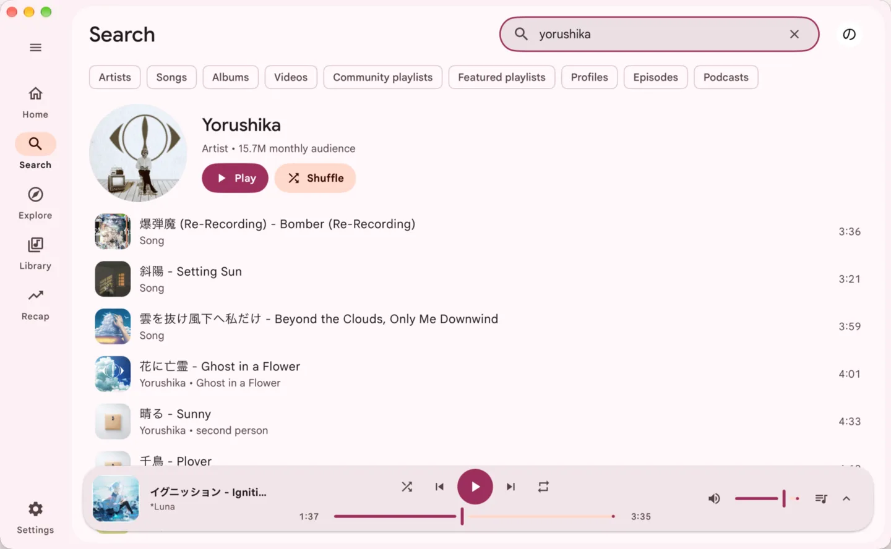
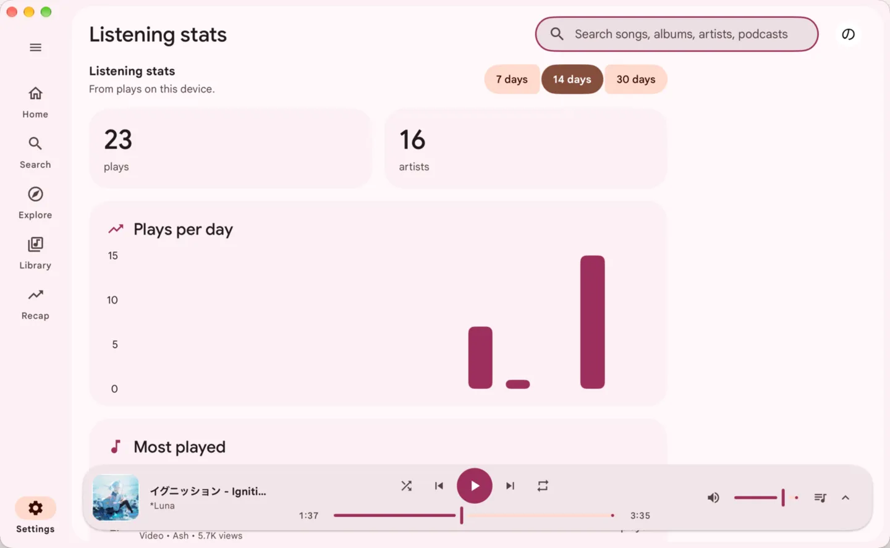
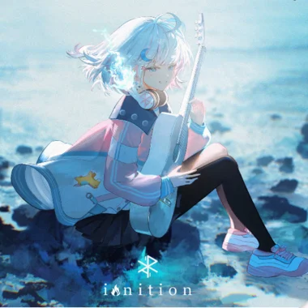

Ten bands, ten presets
Pick a preset and the bands move. Volume levelling keeps every song at a similar loudness.
A native player with no browser inside. No ads, about 100 MB.
Free and open source.
A YouTube Music tab opens around 300 MB, then swells the longer you listen, up to 800. Meiro stays near 100 all day, because it draws its own window instead of carrying Chromium around.
One dot is 20 MB. Meiro can drop to about 99 MB. The fainter dots are what a tab picks up as you keep listening.
Meiro uses about 100 MB of memory. YouTube Music in a browser tab uses 600 to 800 MB.
The window is drawn natively. There is no browser engine to carry around.
Meiro plays the audio stream. With no page, there is no ad slot to fill.
No analytics of its own, and no account needed to listen.
The song plays. The picture does not.
Tired of Electron? Me too. That is why Meiro is not a glorified web page, but an actual desktop app.
Recommendations, new releases and what you played last, without a tab to find.
Songs, albums, artists and playlists, with filters. Recent searches are kept.
The queue, the lyrics and related songs on one screen. A small player follows you while you browse.
The line being sung is the line that is lit. Switch to plain text to read ahead.
Liked songs, your playlists and the artists you follow. Sort a playlist or search inside it.
How much you listened to, day by day. The history stays on your computer and you can delete it.





Meiro takes a colour from the album art and builds the whole window from it. Pick a song in the queue, or press play, and watch this page follow.
Pick a preset and the bands move. Volume levelling keeps every song at a similar loudness.
Rebind any of them in Settings.
Close the window and the music keeps playing. On macOS and Windows the tray opens a small player.
Your keyboard keys, the Now Playing widget on a Mac and the media controls on Linux.
Scrobbles what you play, while you want it to. Pause it any time.
Shows the track, the cover and a time bar on your profile, if you turn it on.
Songs you played lately load faster next time. You choose how many to keep.
Checks for a new version once a day. You can turn it off.
Free and open source. CI builds every release from the source you can read on GitHub.
Meiro is beta and unofficial. It uses YouTube's private interfaces, so a change on YouTube's side can break browsing, playback or sign-in until an update ships. See the known issues. Minimal builds are on the same releases page.
Now playing
